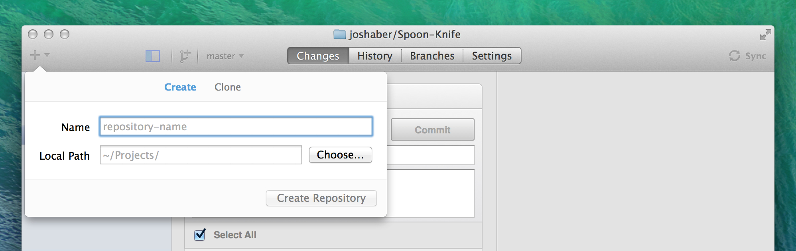
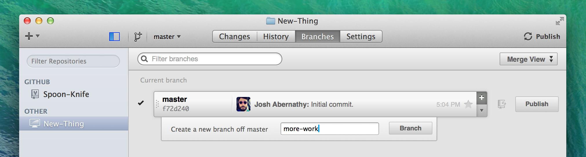
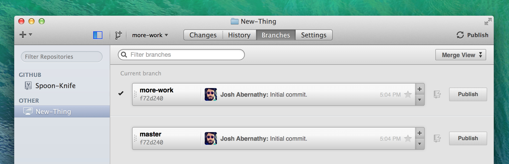

Rather than cloning a pre-existing repository – let's start this time by creating a brand new project.
To create a brand new repository from within GitHub for Mac, click the + button in the upper-left corner of the app window.
Tip: To add repositories that are already on your computer but not yet tracked by GitHub for Mac, you can go up to the File menu and choose Add Local Repository…, or simply drag the repository folders onto the app window.

Give your new repository a name and use the Choose… button to select a folder to place your local copy in. Clicking "Create Repository" will now create a empty project folder and initialize it as a Git repository.
It's a good idea to start off by adding a README file to the repository. Create a README.txt or README.md (for Markdown) file, then commit it to the repository from the Changes view.
Branches
The main branch of a repository is usually named master, and represents a relatively stable version of the project you're working on. So far, all the changes you've made have been on the master branch.
If you're making an app or website, for example, you might have a bunch of different features or ideas in progress at any given time – some of which are ready to go, and others which are not. For this reason, master exists as a central point to fold other branches of work into.
Tip: If you really want to commit straight to master, the app won't stop you. However, this doesn't lend itself well to working collaboratively, and your changes will be harder to track and maintain as the project gets larger.
Click the Branches tab to enter the Branches view. Once you've made an initial commit, you will be automatically switched to the newly-created master branch – which you can see selected under the “Current branch” heading.
To create a new branch off of the master branch, click the + button on the right side of the master row. Type a name for your new branch into the text field that appears, and click Branch to create it.

At this point, your new branch will also become the current branch. Changes you make now to your local copy will not affect the master branch, so you're free to experiment and commit changes, safe in the knowledge that this branch doesn't need to be merged into master until you are ready, or until someone you're working with has reviewed your changes.
If you ever want to switch back to master, simply double-click the master row in the Branches view. Files in the repository on disk will be automatically updated to whatever their contents are on master.
Branches are local only when they're first created, and are not automatically published to the remote repository. Once you're ready to push your changes to GitHub, click the Publish button next to the branch on the Branches view, or the Publish Branch button in the window's title bar.

When there are uncommitted changes on a branch and you then switch to a different branch, GitHub for Mac 'magic stashes' the changes so that they are intact when you switch back!
Tip: You can quickly switch between and create branches from any tab by pressing Command-B or clicking the branch icon in the window's toolbar.
Celebrate
Congratulations! Now that you are creating branches in your project this leaves you and your collaborators free to try all manner of awesome things – with no risk of messing up the master branch.
Are you 100% sure that your awesome thing is ready to fold back into master? It sounds like you're ready to merge.